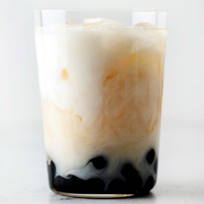

Jasmine Boba Tea

Original recipe by Oh, How Civilized
Author: Jee Choe
Ingredients
Jasmine Green Milk Tea
- 3 jasmine green tea sachets
- 1 cup water
- 2 tablespoons sugar
- 1 cup ice
- ⅓ cup whole milk
Tapioca Pearls
- 2 cups water
- ¼ cup tapioca balls
Instructions
- Boil 1 cup of water. If using an electric kettle with a temperature setting, set the water to 175°F. Use filtered water if possible.
- Steep tea sachets in hot water for 4 minutes.
- Discard tea sachets and stir in sugar. Let tea cool.
- Boil water and add tapioca balls. Boil water in a saucepan on the stovetop then add tapioca balls. Cook on medium-high heat for 8-10 minutes. Stir occasionally. Tapioca balls should be soft all the way through.
- Strain tapioca balls.
- Put tapioca balls into a cup. Add ice, tea, and milk. Use an extra wide straw to drink.